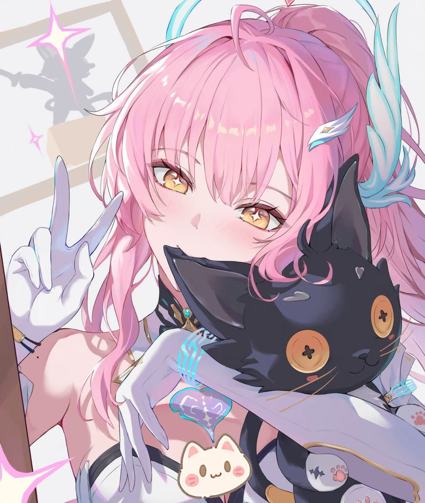

对话
立绘
语调
平静
愤怒生气
温柔
调侃
尚未挂载模型 · 请先拉取语音包
请在下方模型库中一键拉取或导入
调用模型
情绪特征向量 (.bin) 实时试听
多模型管理库
魔搭指令 / 导入
已挂载模型列表
0 个已就绪
官方推荐与待拉取扩展包
点击一键拉取入库
魔搭社区 (ModelScope) 自定义指令拉取
支持输入任意作者或私有微调仓库 ID 离线构建
ModelScope Hub 仓库拉取指令
modelscope.cn
$
该仓库语音模型架构：
Bert-VITS2 (Sherpa-ONNX · 18ms)
Bert-VITS2
GPT-SoVITS v2
IndexTTS2
分片下载与沙盒校验进度
0%
准备就绪...
SHA256 · Verified
从手机本地导入离线模型包
支持导入 .zip / .onnx / .aemeath 模型包并自动建库
模型验证（加载 + 出声自检）
检查权重 / BERT / 条件包 / 采样器 / 播放通道
端侧硬件加速后端
CPU (XNNPACK) · 4 大核
NPU
GPU
CPU
流式自动播报语音
收到大模型回复后自动调用当前挂载模型朗读
括号动作自动剥离
仅合成角色台词，跳过（）内的动作描述
圆形 AI 头像（含预备头像）
当前：主头像 · 1794568840819.jpg
语音模型调用
未装载
看板娘悬浮交互挂件
可拖拽缩放
dsh-whale-widget 风格 · 屏幕自由拖拽 · 尺寸调节 · 点击音效对白
看板娘尺寸大小 (宽度)
130px
点击看板娘弹出的文字对白 (每行一条)
自定义软件背景
当前：默认纯白 #FFFFFF
默认纯白
纯色背景
图片壁纸
纯净白色底板 (#FFFFFF) · 最佳液态玻璃通透度
默认
爱弥斯原图 1
眨眼微笑款

爱弥斯原图 2
比耶黑猫款
壁纸柔光遮罩浓度
25%
全局液态玻璃与柔光透光度调节
未开启 · 处于标准白底磨砂态（点击右侧开启）
液态玻璃透光度 (透出背景壁纸)
72%
柔光散射模糊度 (Blur 雾化强度)
8px
文字双层微光浮雕投影：保持台词与标签极限清晰，绝不遮挡角色构图细节
长按滑块液态玻璃与折射光学调节
控制长按各滑块时的物理弯曲、折射与放大
玻璃折射弯曲强度 (Refraction Distortion)
0.16 (真实光学折射)
0.00 纯平无畸变
0.16 真实物理折射
0.32 极致水晶曲率
透镜图文放大倍率 (Text Magnification)
1.38x (标准放大)
1.00x 原大不缩放
1.38x 黄金放大
1.65x 沉浸特写
长按透镜纵向膨胀 (Lens Bulge Height)
1.30x (+30% 鼓起)
1.05x 轻微隆起
1.30x 标准水滴
1.55x 饱满水珠
晶体月弧高光光泽 (Specular Arc Shine)
95% (高光水晶)
30% 柔和暗哑
65% 半透水晶
100% 极光晶亮
长按试炼体验滑块（请按住或滑动感受手感）
按住滑块感受折射
水滴凸折射 A
水晶高光 B
当前物理：折射 0.16 · 放大 1.38x · 鼓起 +30% · 高光 95%
方框描边与边缘液态玻璃调节
自选描边色彩 · 边缘内镜反射 · 边缘外光晕
方框描边颜色 (Border Stroke Color)
纯白晶莹 #FFFFFF
方框描边粗细 (Border Width)
1.2px (标准微晶)
0.5px 极细光丝
1.2px 标准微晶
3.5px 凝胶粗边
边缘液态玻璃内嵌反射 (Edge Prism Shine)
95% (高光水晶)
10% 柔和暗哑
65% 晶莹透亮
100% 极光水滴
边缘外发光扩散光晕 (Edge Liquid Bloom)
16px (柔和通透)
0px 锐利无晕
16px 柔和通透
32px 梦幻光雾
方框圆角倒角曲率 (Corner Curvature)
24px (标准大圆角)
14px 紧凑圆角
24px 经典圆角
32px 水珠胶囊
实时方框边缘液态玻璃视效预览
当前方框液态玻璃边缘效果
实时生效
爱弥斯：「漂泊者，你看！方框的边缘高光反射、描边色彩与流光外晕，都在随你的调节即时流转呢~」
凸透镜光学发光主题色
支持自取色
冰川蓝 #007AFF
冰川蓝
星炬粉
极光青
自定义
大模型 API 接口配置
本地加密存储
DeepSeek
硅基流动
自定义
专属角色扮演 System 提示词
双层架构实时生效
电子幽灵
星炬学姐
深夜陪伴
自定义
底层语音约束（自动注入）：所有动作描写包裹在圆括号（）内供 UI 渲染并由正则剥离；每句台词前自动附带 [平静]/[开心]/[温柔]/[调侃]/[愤怒生气] 驱动本地 ONNX 声线切换。
软件公告 · 开源与作者声明
完全免费 · GitHub 开源 · 高中生独立开发
本项目完全免费且已在 GitHub 开源，由作者一人独立完成。若涉及侵权请联系我立马下架。
QQ: 2087595508@qq.com
Gmail: xinnb78@gmail.com
切换圆形 AI 头像
主头像与预备头像（点击即切换）
或粘贴图片链接 (URL)
爱弥斯 · 看板娘
点击关闭
旅途愉快，漂泊者！爱弥斯会一直陪伴在你身边~
看板娘个性化定制
dsh-whale-widget 风格悬浮挂件
看板娘尺寸大小
130px
点击弹出的对白台词 (每行一条随机展示)
软件重要声明与用户须知
开源非盈利《爱弥斯 (Aemeath) 离线语音陪伴终端》
完全免费
绝无内购 · 拒绝倒卖
GitHub 开源
代码开源 · 开放透明
作者寄语 & 独立开发说明
一人独立完成
本项目是作者单独做的，没有任何团队，作者还只是个高中生，希望大家多多支持和反馈方便我优化，这款软件支持高度自定义，可以修改软件的大部分UI界面。若该软件涉及侵权请联系我，我立马下架。
联系与反馈邮箱（点击可一键复制）：
随时欢迎建议与反馈
2087595508@qq.com
(QQ 邮箱)
点击复制
xinnb78@gmail.com
(Gmail)
点击复制
已更新